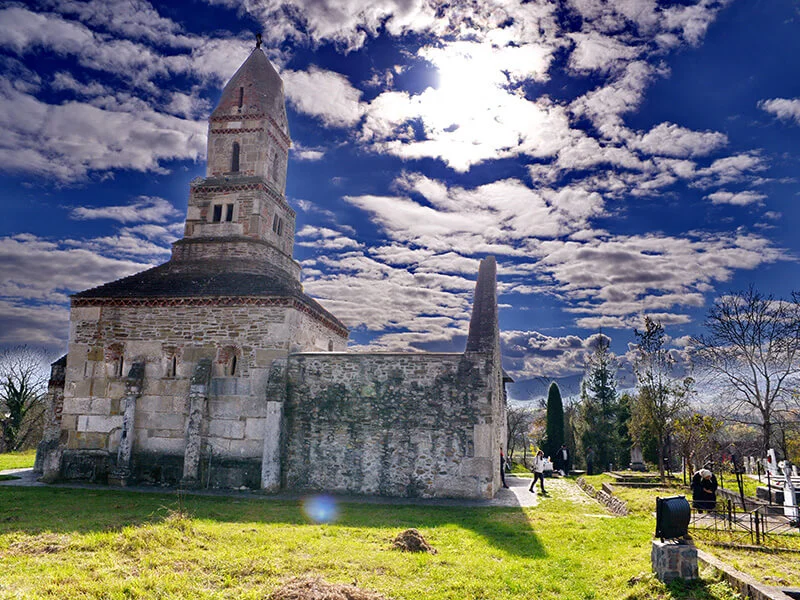

Redescoperă bucuria de a crea în mijlocul naturii. O terapie prin culoare și ritm corporal, unde liniștea munților devine partenerul tău de inspirație.
Ateliere de Creație
Învățăm rânduiala gustului adevărat și a meșteșugurilor uitate. De la aroma supei gătite la ceaun până la obiecte plămădite cu mâna ta, din suflet.

Pelerinaje
Drumuri cu tâlc spre rădăcinile noastre. Vizităm biserici de piatră și schituri ascunse, unde timpul a stat în loc pentru a ne lăsa să respirăm istoria.
Chitară Live
Când soarele apune peste Vadu Dobrii, ne adunăm în jurul focului. Acorduri calde de chitară acustică și povești șoptite sub pătura infinită de stele.
Pe două roți
Aventură conștientă pe cărări de munte. Explorăm sălbăticia cu e-bike-uri performante, simțind libertatea crestelor fără a tulbura liniștea pădurii.
Pas cu pas
Hoinărim prin păduri de fag și platouri alpine. O plimbare meditativă unde fiecare pas te apropie de tine și de măreția Munților Poiana Ruscă.